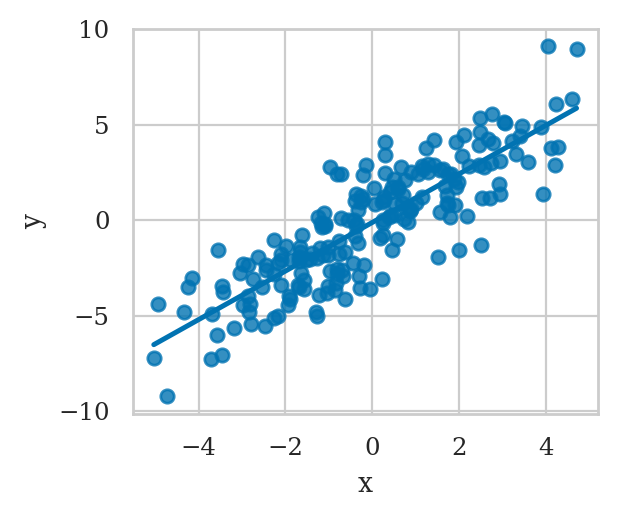
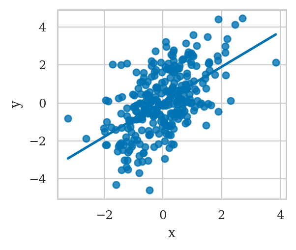
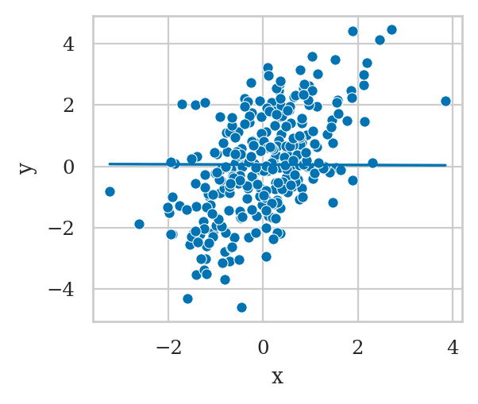
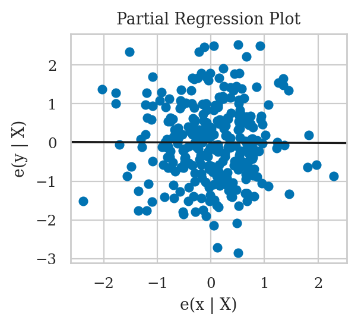
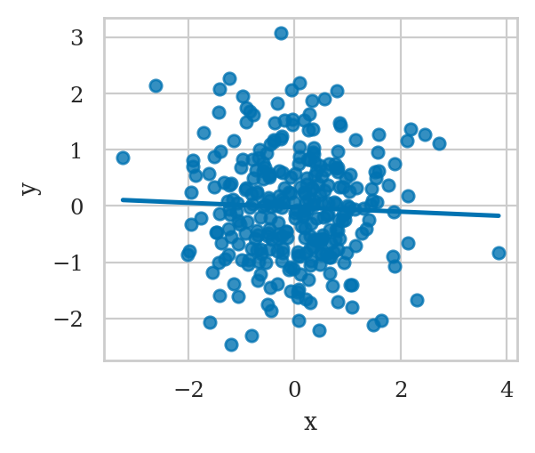
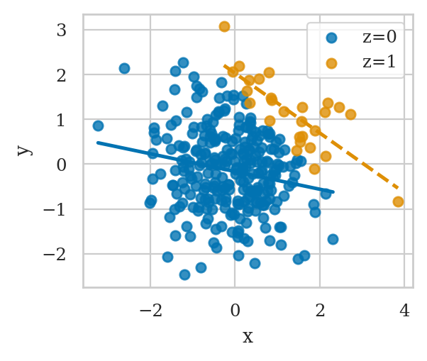

Section 4.5 — Model selection#
This notebook contains the code examples from Section 4.5 Model selection from the No Bullshit Guide to Statistics.
Notebook setup#
# load Python modules
import os
import numpy as np
import pandas as pd
import seaborn as sns
import matplotlib.pyplot as plt
# Figures setup
plt.clf() # needed otherwise `sns.set_theme` doesn't work
from plot_helpers import RCPARAMS
# RCPARAMS.update({'figure.figsize': (10, 3)}) # good for screen
RCPARAMS.update({'figure.figsize': (3, 2.5)}) # good for print
sns.set_theme(
context="paper",
style="whitegrid",
palette="colorblind",
rc=RCPARAMS,
)
# High-resolution please
%config InlineBackend.figure_format = 'retina'
# Where to store figures
DESTDIR = "figures/lm/modelselection"
<Figure size 640x480 with 0 Axes>
# set random seed for repeatability
np.random.seed(42)
# import statsmodels.api as sm
import statsmodels.formula.api as smf
from scipy.stats import norm
from scipy.stats import binom
from scipy.stats import bernoulli
students = pd.read_csv("../datasets/students.csv")
students[["effort","score"]].mean(), students[["effort","score"]].std()
(effort 8.904667
score 72.580000
dtype: float64,
effort 1.948156
score 9.979279
dtype: float64)
Fork#
Example 1#
from scipy.stats import norm
np.random.seed(41)
n = 200
ws = norm(0,1).rvs(n)
xs = 2*ws + norm(0,1).rvs(n)
ys = 0*xs + 3*ws + norm(0,1).rvs(n)
df1 = pd.DataFrame({
"x": xs,
"w": ws,
"y": ys,
})
sns.regplot(x="x", y="y", data=df1, ci=None)
<Axes: xlabel='x', ylabel='y'>

lm1a = smf.ols("y ~ x", data=df1).fit()
lm1a.params
Intercept -0.118596
x 1.268185
dtype: float64
lm1b = smf.ols("y ~ x + w", data=df1).fit()
lm1b.params
Intercept -0.089337
x 0.077516
w 2.859363
dtype: float64
Example 2#
np.random.seed(43)
n = 100
mems = norm(5,1).rvs(n)
efforts = 20 - 3*mems + norm(0,1).rvs(n)
scores = 10*mems + 2*efforts + norm(0,1).rvs(n)
df2 = pd.DataFrame({
"mem":mems,
"effort": efforts,
"score": scores
})
lm2a = smf.ols("score ~ effort", data=df2).fit()
lm2a.params
Intercept 64.275333
effort -0.840428
dtype: float64
lm2b = smf.ols("score ~ effort + mem", data=df2).fit()
lm2b.params
Intercept 2.650981
effort 1.889825
mem 9.568862
dtype: float64
Benefits of random assignment#
TODO explain
TODO: figure
Example 2 with random assignment#
from scipy.stats import bernoulli
np.random.seed(47)
n = 300
mems = norm(5,1).rvs(n)
coins = bernoulli(p=0.5).rvs(n)
efforts = 5*coins + 15*(1-coins)
scores = 10*mems + 2*efforts + norm(0,1).rvs(n)
df2r = pd.DataFrame({
"mem": mems,
"effort": efforts,
"score": scores,
})
# non-randomized # with random assignment
df2.corr()["mem"]["effort"], df2r.corr()["mem"]["effort"]
(-0.9452404905554658, 0.037005646395469494)
df2r.groupby("effort")["mem"].mean()
effort
5 4.958010
15 5.032875
Name: mem, dtype: float64
lm8a = smf.ols("score ~ effort", data=df2r).fit()
lm8a.params
Intercept 49.176242
effort 2.077639
dtype: float64
lm8b = smf.ols("score ~ effort + mem", data=df2r).fit()
lm8b.params
Intercept -0.343982
effort 2.002295
mem 10.063906
dtype: float64
lm8c = smf.ols("score ~ mem", data=df2r).fit()
lm8c.params
Intercept 17.382804
mem 10.430159
dtype: float64
Pipe#
Example 3#
np.random.seed(42)
n = 300
xs = norm(0,1).rvs(n)
ms = xs + norm(0,1).rvs(n)
ys = ms + norm(0,1).rvs(n)
df3 = pd.DataFrame({
"x": xs,
"m": ms,
"y": ys,
})
lm3a = smf.ols("y ~ x", data=df3).fit()
print(lm3a.params)
sns.regplot(x="x", y="y", data=df3, ci=None);
Intercept 0.060272
x 0.922122
dtype: float64

from ministats import plot_lm_partial
lm3b = smf.ols("y ~ x + m", data=df3).fit()
print(lm3b.params)
sns.scatterplot(data=df3, x="x", y="y")
plot_lm_partial(lm3b, "x")
Intercept 0.081242
x -0.005561
m 0.965910
dtype: float64
x intercept= 0.05512471983474231 slope= -0.0055614338054783136

from statsmodels.graphics.api import plot_partregress
plot_partregress("y", "x", exog_others=["m"], data=df3, obs_labels=False);

Example 4#
Students’ final scores as a function of effort.
We assume the final scores for the course was mediated through improvements in general competency (comp).
np.random.seed(42)
n = 200
efforts = norm(9,2).rvs(n)
comps = 2*efforts + norm(0,1).rvs(n)
scores = 3*comps + norm(0,1).rvs(n)
# studentscmp ?
df4 = pd.DataFrame({
"effort": efforts,
"comp": comps,
"score": scores,
})
The causal graph in this situation is an instance of the mediator pattern,
so the correct modelling decision is not to include the comp variable,
which allows us to recover the correct parameter.
lm4a = smf.ols("score ~ effort", data=df4).fit()
lm4a.params
Intercept -0.538521
effort 6.079663
dtype: float64
However,
if we make the mistake of including the variable comp in the model,
we will obtain a zero parameter for the effort,
which is a wrong conclusion.
lm4b = smf.ols("score ~ effort + comp", data=df4).fit()
lm4b.params
Intercept 0.545934
effort -0.030261
comp 2.979818
dtype: float64
Collider#
Example 5#
from scipy.stats import norm
np.random.seed(42)
n = 300
xs = norm(0,1).rvs(n)
ys = norm(0,1).rvs(n) # independent of x
zs = (xs + ys >= 1.7).astype(int)
df5 = pd.DataFrame({
"x": xs,
"y": ys,
"z": zs,
})
lm5 = smf.ols("y ~ 1 + x", data=df5).fit()
print(lm5.params)
sns.regplot(x="x", y="y", data=df5, ci=None)
Intercept -0.021710
x -0.039576
dtype: float64
<Axes: xlabel='x', ylabel='y'>

df5z0 = df5[df5["z"]==0]
lm5z0 = smf.ols("y ~ 1 + x", data=df5z0).fit()
print(lm5z0.params)
Intercept -0.164016
x -0.197910
dtype: float64
df5z1 = df5[df5["z"]==1]
lm5z1 = smf.ols("y ~ 1 + x", data=df5z1).fit()
print(lm5z1.params)
sns.regplot(x="x", y="y", data=df5z0, ci=None, label="z=0")
sns.regplot(x="x", y="y", data=df5z1, ci=None, line_kws={"linestyle":"dashed"}, label="z=1")
plt.legend()
Intercept 2.032647
x -0.666737
dtype: float64
<matplotlib.legend.Legend at 0x7fe692ed2f10>

# ALT. combined model and plot using `lmplot`
# lm6b = smf.ols("y ~ 1 + C(z):x + C(z)", data=df5).fit()
# print(lm6b.params)
# sns.lmplot(x="x", y="y", hue="z", ci=None, data=df5)
Example 6#
np.random.seed(46)
n = 300
efforts = norm(9,2).rvs(n)
scores = 5*efforts + norm(10,10).rvs(n)
gpas = 0.1*efforts + 0.02*scores + norm(0.6,0.3).rvs(n)
# studentsgpa ?
df6 = pd.DataFrame({
"effort": efforts,
"score": scores,
"gpa": gpas,
})
When we don’t adjust for the collider gpa,
we obtain the correct effect of effort on scores.
lm3a = smf.ols("score ~ 1 + effort", data=df6).fit()
lm3a.params
Intercept 12.747478
effort 4.717006
dtype: float64
But with adjustment for gpa reduces the effect significantly.
lm3b = smf.ols("score ~ 1 + effort + gpa", data=df6).fit()
lm3b.params
Intercept 1.464950
effort 1.177600
gpa 16.624215
dtype: float64
The false negative effect can also appear from sampling bias, e.g. if we restrict our analysis only to people who were promoted.
Selection bias as a collider#
Example 6B: biased dataset#
Suppose the study was conducted only on students who obtained an award.
df6b = df6[df6["gpa"]>3.4]
print(len(df6b))
lm6b = smf.ols("score ~ effort", data=df6b).fit()
lm6b.params
23
Intercept 78.588495
effort -0.126503
dtype: float64
Explanations#
Discussion#
Variable selection#
# load the doctors data set
doctors = pd.read_csv("../datasets/doctors.csv")
# fit the short model
formula2 = "score ~ 1 + alc + weed + exrc"
lm2 = smf.ols(formula2, data=doctors).fit()
# print(lm2.params)
# fit long model with useful loc variable
formula3 = "score ~ 1 + alc + weed + exrc + C(loc)"
lm3 = smf.ols(formula3, data=doctors).fit()
print(lm3.params)
# fit long model with useless varaible
formula2p = "score ~ 1 + alc + weed + exrc + permit"
lm2p = smf.ols(formula2p, data=doctors).fit()
Intercept 63.606961
C(loc)[T.urb] -5.002404
alc -1.784915
weed -0.840668
exrc 1.783107
dtype: float64
Comparing metrics#
lm2.aic, lm3.aic, lm2p.aic
(1103.2518084235273, 1092.5985552344712, 1102.6030626936558)
lm2.bic, lm3.bic, lm2p.bic
(1115.4512324525256, 1107.8478352707189, 1117.8523427299035)
F-test for the submodel#
F, p, _ = lm3.compare_f_test(lm2)
F, p
(12.758115596295502, 0.00047598123084921035)
The \(p\)-value is smaller than \(0.05\),
so we conclude that adding the variable loc improves the model.
F, p, _ = lm2p.compare_f_test(lm2)
F, p
(2.5857397307381698, 0.10991892492566509)
The \(p\)-value is greater than \(0.05\),
so we conclude that adding the variable permit doesn’t improve the model.
Likelihood ratio test#
lm3.compare_lr_test(lm2)
(12.653253189056159, 0.00037491272670289223, 1.0)
lm2p.compare_lr_test(lm2)
(2.648745729871507, 0.10363163447814171, 1.0)
Exercises#
Links#
CUT MATERIAL#
Bonus examples#
Bonus example 1#
Example 2 from Why We Should Teach Causal Inference: Examples in Linear Regression With Simulated Data
np.random.seed(1897)
n = 1000
iqs = norm(100,15).rvs(n)
ltimes = 200 - iqs + norm(0,1).rvs(n)
tscores = 0.5*iqs + 0.1*ltimes + norm(0,1).rvs(n)
bdf2 = pd.DataFrame({
"iq":iqs,
"ltime": ltimes,
"tscore": tscores
})
lm2a = smf.ols("tscore ~ ltime", data=bdf2).fit()
lm2a.params
Intercept 99.602100
ltime -0.395873
dtype: float64
lm2b = smf.ols("tscore ~ ltime + iq", data=bdf2).fit()
lm2b.params
Intercept 3.580677
ltime 0.081681
iq 0.482373
dtype: float64
Bonus example 2#
Example 1 from Why We Should Teach Causal Inference: Examples in Linear Regression With Simulated Data
np.random.seed(1896)
n = 1000
learns = norm(0,1).rvs(n)
knows = 5*learns + norm(0,1).rvs(n)
undstds = 3*knows + norm(0,1).rvs(n)
bdf1 = pd.DataFrame({
"learn":learns,
"know": knows,
"undstd": undstds
})
lm1a = smf.ols("undstd ~ learn", data=bdf1).fit()
lm1a.params
Intercept -0.045587
learn 14.890022
dtype: float64
lm1b = smf.ols("undstd ~ learn + know", data=bdf1).fit()
lm1b.params
Intercept -0.036520
learn 0.130609
know 2.975806
dtype: float64
Bonus example 3#
Example 3 from Why We Should Teach Causal Inference: Examples in Linear Regression With Simulated Data
np.random.seed(42)
n = 1000
ntwrks = norm(0,1).rvs(n)
comps = norm(0,1).rvs(n)
boths = ((ntwrks > 1) | (comps > 1))
lucks = bernoulli(0.05).rvs(n)
proms = (1 - lucks)*boths + lucks*(1 - boths)
bdf3 = pd.DataFrame({
"ntwrk": ntwrks,
"comp": comps,
"prom": proms,
})
Without adjusting for the collider prom,
there is almost no effect of the network ability on competence.
lm3a = smf.ols("comp ~ ntwrk", data=bdf3).fit()
lm3a.params
Intercept 0.071632
ntwrk -0.041152
dtype: float64
But with adjustment for prom,
there seems to be a negative effect.
lm3b = smf.ols("comp ~ ntwrk + prom", data=bdf3).fit()
lm3b.params
Intercept -0.290081
ntwrk -0.239975
prom 1.087964
dtype: float64
The false negative effect can also appear from sampling bias, e.g. if we restrict our analysis only to people who were promoted.
df3proms = bdf3[bdf3["prom"]==1]
lm3c = smf.ols("comp ~ ntwrk", data=df3proms).fit()
lm3c.params
Intercept 0.898530
ntwrk -0.426244
dtype: float64
Bonus example 4: benefits of random assignment#
Example 4 from Why We Should Teach Causal Inference: Examples in Linear Regression With Simulated Data
np.random.seed(1896)
n = 1000
iqs = norm(100,15).rvs(n)
groups = bernoulli(p=0.5).rvs(n)
ltimes = 80*groups + 120*(1-groups)
tscores = 0.5*iqs + 0.1*ltimes + norm(0,1).rvs(n)
bdf4 = pd.DataFrame({
"iq":iqs,
"ltime": ltimes,
"tscore": tscores
})
# non-randomized # random assignment
bdf2.corr()["iq"]["ltime"], bdf4.corr()["iq"]["ltime"]
(-0.9979264589333364, -0.020129851374243963)
bdf4.groupby("ltime")["iq"].mean()
ltime
80 99.980423
120 99.358152
Name: iq, dtype: float64
lm4a = smf.ols("tscore ~ ltime", data=bdf4).fit()
lm4a.params
Intercept 50.688293
ltime 0.091233
dtype: float64
lm4b = smf.ols("tscore ~ ltime + iq", data=bdf4).fit()
lm4b.params
Intercept -0.303676
ltime 0.099069
iq 0.503749
dtype: float64
lm4c = smf.ols("tscore ~ iq", data=bdf4).fit()
lm4c.params
Intercept 9.896117
iq 0.501168
dtype: float64